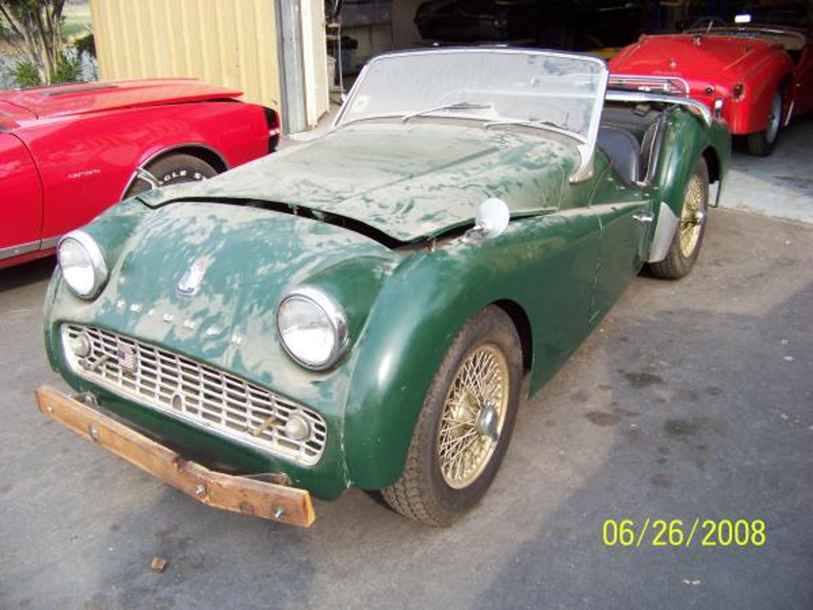

From the shop
Triumph restoration
Union Jack restores Triumph sports cars — TR3, TR4, TR6, Spitfire and GT6 — in San Martin, California. Most Triumphs have a separate chassis, which means the body can come off whole and the frame can be repaired properly rather than patched under a fitted shell.

What we take on
A separate chassis is the great advantage of a Triumph restoration: you can take the car right back and rebuild from the frame up, rather than working around rot you cannot reach.
Every project starts the same way: we look at the car, then write an estimate and a stage-by-stage worksheet before any work begins. You decide what is worth doing.
- TR3
- TR2, TR3, TR3A and TR3B
- TR4
- TR4 and TR4A
- TR6
- Carburettor and fuel-injected cars
- Small chassis
- Spitfire and GT6
What usually needs doing
Honest notes on where these cars go wrong, so you know what to look for before you buy one or bring it in.
- Chassis outriggers and rear frameThe outriggers that support the body rot from the inside, and on TR6s the rear of the frame around the differential mounts is the area to inspect first. Body-off is the only honest way to assess it.
- TR6 differential and trailing arm mountsThe brackets that locate the trailing arms and the differential mounts are known to crack and pull. Left alone it changes the rear geometry and the car never handles right.
- Body tub and floorsFloors, inner sills and the base of the rear wings collect water. On TR3s the doors and their shut faces are worth a close look.
- Brakes worth knowing aboutThe TR3 was among the first production cars sold with front disc brakes. Getting the correct specification back onto a car that has been modified over sixty years is often part of the job.
Triumph work from the shop
The photograph above is a Triumph TR3 from Union Jack’s own pictures, as the car arrived. It is not a finished beauty shot.
Triumph questions
Straight answers, including the ones about cost.
Where do Triumph TR6 chassis rot?
The outriggers that carry the body and the rear section of the frame around the differential mounts are the usual places. Because the body sits on a separate chassis, a proper assessment means lifting the body off rather than looking underneath.
Why do TR6 trailing arm brackets matter?
They locate the rear suspension. When they crack or pull away the rear geometry changes and the car will not handle correctly no matter what else is replaced. It is a repair worth doing properly during a restoration.
Is a separate chassis easier to restore than a monocoque?
In many ways yes. The body can be lifted off whole, so the frame can be blasted, repaired, painted and rebuilt on its own. It costs more in labour up front but produces a far more honest result than patching from underneath.
Do you work on Spitfires and GT6s?
Yes. They use a backbone chassis with outriggers and sills that rot in their own particular way, and they come through the shop regularly.
Other marques we restore
Bring us the car
Tell us what you have and what you want from it. We look at the car before quoting anything.